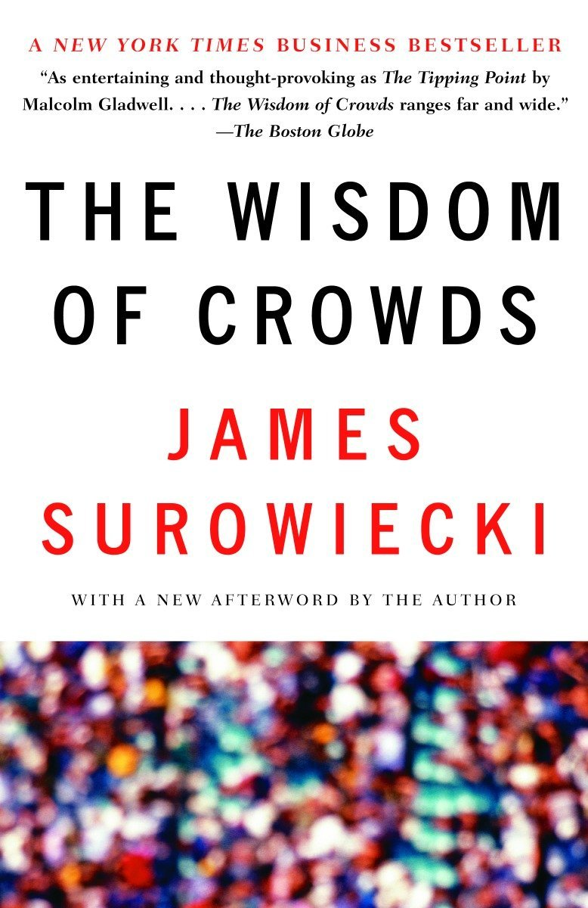

В 2004 году журналистом Джеймсом Шуровьески была опубликована книга "Мудрость толпы", где заявлялось, что при правильно заданных условиях поиск решения какой-либо проблемы с опорой на совокупные знания многих людей может быть более эффективной методикой, чем использование знаний и опыта нескольких из них. Т.е. эксперты, даже самые умные, всегда будут более ограничены, чем тысячи энтузиастов.
Чуть позже, в 2006 году термин «краудсорсинг»
впервые появился и был употреблен Джеффом Хау на страницах журнала Wired.
Тогда он описывал работу ресурса Open Source Footwear, где группы людей
работали за идею, создавая компьютерные программы, после предоставляя широкой общественности результаты своего труда безвозмездно. И в качестве шутки Хау придумал такому явлению название crowdsourcing, crowd – толпа, и sourcing – ресурс, которое моментально прижилось.
В мире использование феномена мудрой толпы используется давно.
Например, в начале 18 века Британским государством было предложено вознаграждение за изобретение точного метода определения долготы для мореплавателей.
Так же Наполеон Бонапарт, во время военных походов в 1975 году предложил приз, размеров в 12000 франков за лучших способ сохранения пищи свежей на фронте. Эта история дала развитие современной консервной промышленности.
Одним из самых масштабных проектов современного краудсорсинга принято считать Википедию, созданную в 2001 году, где любой желающий может внести часть своих знаний в развитие Всемирной энциклопедии.
Основной задачей платформы Crowd Opinion является объединение множества разрозненных инициатив в одном месте. Это позволит организациям по всему свету создавать проекты, направленные на решение социальных и бизнес задач в различных сферах, создавая вокруг проектов сообщество, где люди из любой точки мира могут предлагать идеи и решения, которые приведут к инновационным изменениям.
Наша платформа создана для того, чтобы максимально использовать потенциал
мудрой толпы для внедрения инноваций, поиска
возможностей и решения проблем.
Каждый может изменить
мир. Мы можем помочь.
Единственный вопрос: «Какую задачу вы хотите разрешить?!»